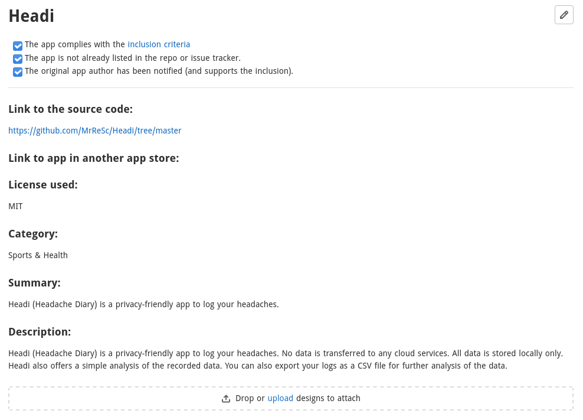
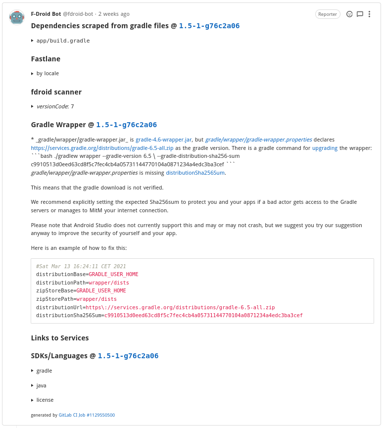

In meinem letzten Artikel habe ich kurz meine erste Android-App Headi vorgestellt. Als ich im Redaktionsteam von meiner App erzählte, hat mich Ulf (ub1x) auf die spannenden Artikel von Izzy, einem Maintainer von F-Droid und Betreiber des IzzyOnDroid Repositorium (Repo), aufmerksam gemacht. In diesem Artikel möchte ich kurz meine Erfahrung mit dem Veröffentlichen meiner App und einen Leitfaden dazu mit euch teilen.
Ehrlich gesagt, war es nicht gerade einfach, die Prozesse hinter F-Droid zu durchschauen. Es ist zwar viel Dokumentation vorhanden, aber für mich war es nicht gerade verständlich und bei vielem hatte ich das Gefühl, es sei veraltet. Da hat mir der Artikel “F-Droid für fortgeschrittene Anwender und für Entwickler” insbesondere der Abschnitt “Für Entwickler: Prozess der Integration einer App in F-Droid” von Izzy sehr geholfen.
Als Erstes sollte man sicherstellen, dass die App, die veröffentlicht werden soll, die folgenden Aufnahmekriterien erfüllt. F-Droid formuliert es so (etwas gekürzt und übersetzt):
Anmerkung:
- Wir können keine Apps mit Googles proprietären
Play-Servicesbauen.- Wir können keine Apps bauen, die proprietäre Tracking Analyse-Abhängigkeiten wie Crashlytics und Firebase verwenden.
- Wir können keine Apps mit proprietären Werbebibliotheken bauen. Wir haben nichts gegen Werbung (siehe AntiFeatures), aber sie muss auf eine FLOSS-kompatible Weise bereitgestellt werden.
- Wir können keine Anwendungen bauen, die Non-Free-Buildtools benötigen, einschliesslich Oracles JDK oder einige Pre-Release-Toolchains.
Zusätzlich:
- Der Quellcode der Anwendung muss in einem öffentlich zugänglichen Versionskontrollsystem gepflegt werden.
- Die Software sollte keine zusätzlichen ausführbaren Binärdateien herunterladen.
- Die Software sollte ihre eigene eindeutige Android-Paket-ID verwenden.
- Obwohl es nicht ideal ist, können “nicht-funktionale” Assets (z.B. Artworks) unter weniger freizügigen Lizenzen als funktionaler Code akzeptiert werden.
- Markenzeichen dürfen nicht verletzt werden, und alle anderen rechtlichen Anforderungen müssen beachtet werden.
- F-Droid beantragt keine API-Schlüssel selbst. Werden solche von der App benötigt, müssen sie im Quell-Repo hinterlegt sein.
- Binäre Abhängigkeiten wie JAR-Dateien müssen durch quellbasierte Versionen ersetzt oder aus einem vertrauenswürdigen Repository verwendet werden.
Idealerweise:
- Releases sollten eindeutig gekennzeichnet sein.
Hier möchte ich auch noch auf die Zusammenfassung der Aufnahmekriterien von Izzy verweisen, da diese etwas einfacher verständlich sind.
Wenn die App, die du veröffentlichen willst, die obigen Aufnahmekriterien erfüllt, kannst du ein “Request for Packaging” RFP (Anfrage für’s Paketieren) erstellen. Es ist nämlich so, dass F-Droid alle Apps, die im Store erhältlich sind, aus dem Quellcode selbst kompiliert und danach signiert. Beim Google Play Store hingegen, kompiliert und signiert der Entwickler seine App noch selbst (dies wird sich allerdings ab November 2021 ändern). Der Antrag dient dazu, dass einerseits ein Mitglied des F-Droid Teams die App überprüfen kann und andererseits aus den Angaben eine Metadaten-Datei zu der App erstellt werden kann. Diese Metadaten-Datei wird später für das Erstellen der App benötigt.
Für ein RFP muss im Repo “Request for Packaging” ein neues Issue eröffnet werden. Dazu muss die vorhandene Vorlage vollständig ausgefüllt werden.

Nachdem der RFP gespeichert wurde, kommt binnen Stunden der F-Droid Bot vorbei und prüft die Angaben. Dazu durchkämmt er den Quellcode der App und teilt seine Ergebnisse als Beitrag im eröffneten Issue.

Falls es Probleme gibt, sind diese im Bericht vom F-Droid Bot zu sehen. Nachdem der Bot seine Arbeit verrichtet hat, setzt sich ein freundliches Teammitglied von F-Droid mit dir in Verbindung und hilft allfällige Probleme zu beheben und beantwortet sehr schnell Fragen.
Der ganze Verlauf zum Issue #1680 meiner App kann natürlich eingesehen werden.
Tipp: Damit du zukünftig die Beschreibungen und Screenshots deiner App einfach selbst ändern kannst, solltest du von Beginn an die Fastlane Struktur in deinem Projekt pflegen.
Bei der Metadaten-Datei handelt es sich um eine yml Datei, die wie der Name schon sagt Metainformation wie Autor und Lizenz zu der App enthält. Der Build-Server von F-Droid versucht in jedem Build-Zyklus für jede Metadaten-Datei die entsprechende App zu erstellen, falls es eine neue Version gibt.
Categories:
- Sports & Health
License: MIT
AuthorName: MrReSc
SourceCode: https://github.com/MrReSc/Headi
IssueTracker: https://github.com/MrReSc/Headi/issues
Translation: https://crwd.in/headi
Changelog: https://github.com/MrReSc/Headi/releases
AutoName: Headi
RepoType: git
Repo: https://github.com/MrReSc/Headi
Builds:
- versionName: 1.9.0-beta
versionCode: 190
commit: 1.9.0-beta
subdir: app
gradle:
- yes
...
AutoUpdateMode: Version %v
UpdateCheckMode: Tags
CurrentVersion: 1.10.2-beta
CurrentVersionCode: 1102
Sind allfällige Probleme behoben und alle Daten vorhanden, erstellt ein Teammitglied von F-Droid die Metadaten-Datei zu deiner App. Dabei wird auch geprüft, ob die App erstellt werden kann und sie wird auf einem Gerät getestet.
Im merge request #8684 ist schön zu sehen, was im Hintergrund passiert ist:
Sobald die Metadaten-Datei in das Data Repo gemerged wurde, wird die App beim nächsten Build-Zyklus erstellt und in den Index aufgenommen.
Wie man bei diesem transparenten Prozess sehr gut sieht, wird jede App sehr genau überprüft. Schadsoftware wird es hier schwer haben.
Nun wartet man natürlich ungeduldig bis die eigene App im F-Droid Store erscheint. Um zu verstehen, wie der Prozess funktioniert, gibt es ein FAQ das die dringendsten Fragen beantwortet. Im Folgenden die zwei wichtigsten Fragen und Antworten von mir frei übersetzt.
Wie lange dauert es bis meine App auf der Website und im Client angezeigt wird?
Die apk muss zuerst auf dem Build-Server gebaut, dann signiert (manueller Schritt) und zuletzt muss ein neuer Index erstellt und veröffentlicht werden.
Wenn man also Glück hat, dauert es 2 Tage. Wenn man nicht so viel Glück hat (merge geschah eine Minute nach dem Start des Build-Zyklus), dauert es 4 Tage. Wenn man sehr viel Pech hat, kommt Murphy zwischendurch mit einigen Problemen… Also bitte keine Panik, bevor 5 Tage vergangen sind 😉.
Kann ich den aktuellen Build-Status sehen?
Sicher, dafür gibt es den F-Droid Monitor, in dem man den aktuellen (running) und den letzten abgeschlossenen (build) Build-Zyklus sowie die deaktivierten (Disabled builds) Builds und mehr sehen kann. Historische Builds können in den Build-Aktivitätsprotokollen gefunden werden.
Zusätzlich gibt es noch die App F-Droid Build Status, die einen sogar benachrichtigt, sobald ein neuer Build verfügbar ist.
In regelmässigen Abständen wird von der F-Droid CI checkupdates anhand der Information in der Metadaten-Datei das Quell-Repo auf Updates überprüft. Wenn die Quelle ein git Repo ist, wird überprüft, ob ein neuer tag vorhanden ist. Falls ja, wird die neue Version in der Metadaten-Datei geschrieben und im nächsten Build-Zyklus verwendet.
Ich finde, Entwickler müssten schneller einfachere Anleitungen für den Veröffentlichungsprozess finden. In der Dokumentation wird gesagt, der schnellste Weg sei ein merge request ins fdroiddata Repo. Das kann so auch stimmen, aber wenn man sich den F-Droid Quick Start Guide anschaut, überlegt man es sich nochmals.
Zu Testzwecken habe ich auch versucht, mit Repomaker mein eigenes Repo auf GitHub zu hosten. Leider hat das auch nicht geklappt. Zuerst startet das Flatpak nicht und der push ins Repo funktioniert irgendwie auch nicht. Bei dem Projekt scheint nicht mehr viel zu laufen, auch wurde es zwischenzeitlich mal eingestellt. Die Idee ist wirklich nett, und die Bedienung ist auch wirklich einfach, aber wenn es nicht funktioniert, bringt alles nichts. Falls jemand Lust hat bei diesem Projekt zu helfen, sie würden sich sicher freuen.
Als ich erneut einen Anlauf nahm und einen RFP eröffnet habe, war ich hellauf begeistert wie einfach und unkompliziert es funktionieren kann. Ich hoffe, mit diesem Artikel auch einen kleinen Beitrag zum Verständnis der Prozesse bei F-Droid leisten zu können.